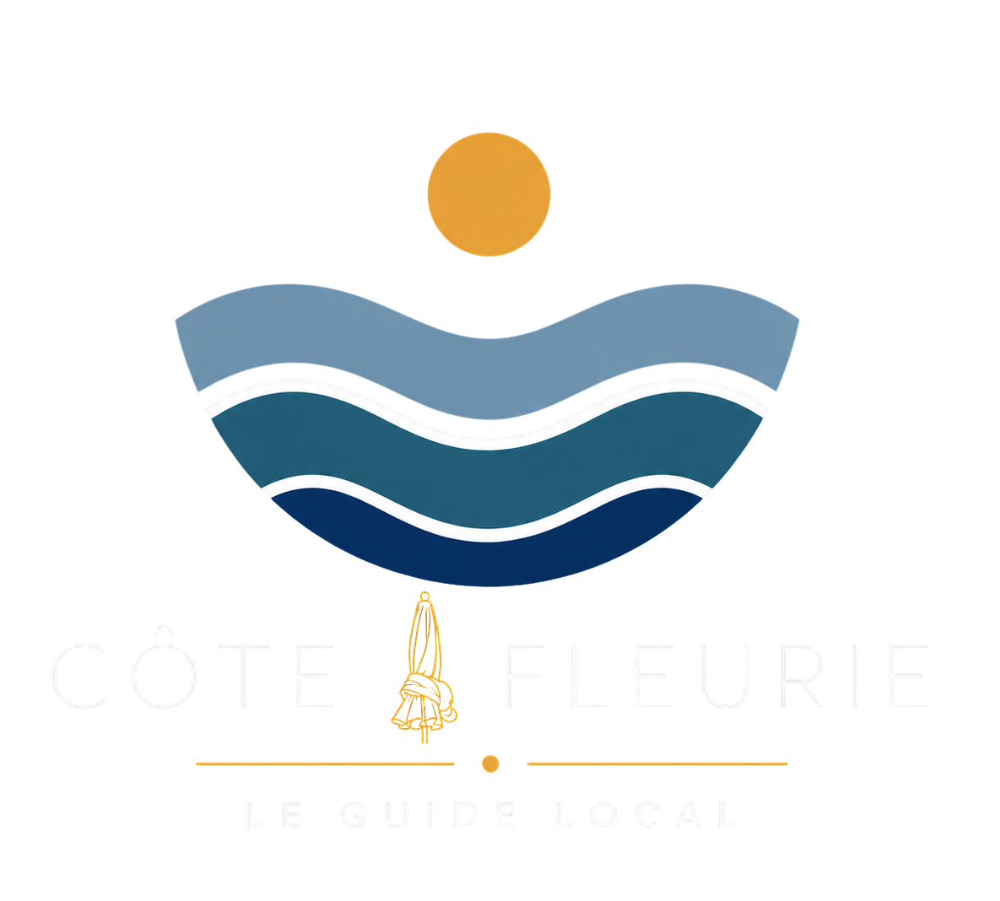

<div class="footer-content">

    <!-- Logo -->
    <div class="footer-brand">
        
    </div>

    <!-- Liens du footer -->
    <nav class="footer-links" aria-label="Navigation du pied de page">

        <!-- Ligne des villes -->
        <div class="footer-cities">
            <a href="../decouvrir/cabourg.html">Cabourg</a>
            <a href="../decouvrir/houlgate.html">Houlgate</a>
            <a href="../decouvrir/deauville.html">Deauville</a>
            <a href="../decouvrir/trouville.html">Trouville-sur-Mer</a>
            <a href="../decouvrir/merville-franceville.html">Merville-Franceville</a>
            <a href="../decouvrir/dives.html">Dives-sur-Mer</a>
            <a href="../decouvrir/villers.html">Villers-sur-Mer</a>
            <a href="../decouvrir/honfleur.html">Honfleur</a>
        </div>

        <!-- Ligne des autres pages -->
        <div class="footer-pages">
            <a href="../experiences/index.html">Expériences</a>
            <a href="../pratique.html">Infos pratiques</a>
        </div>

    </nav>

</div>